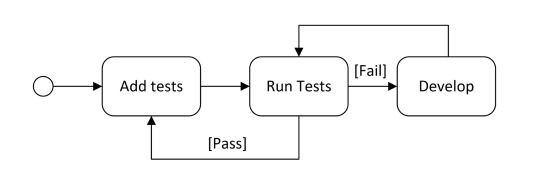
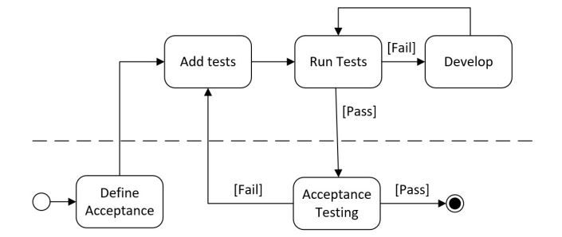
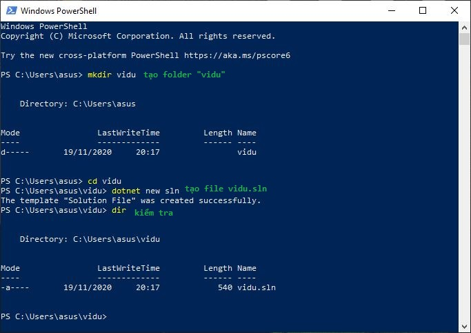
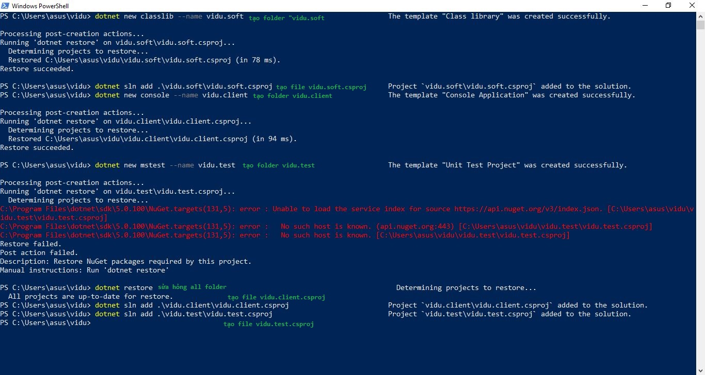
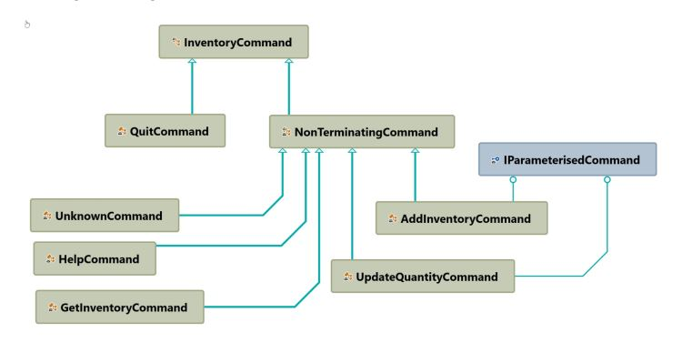
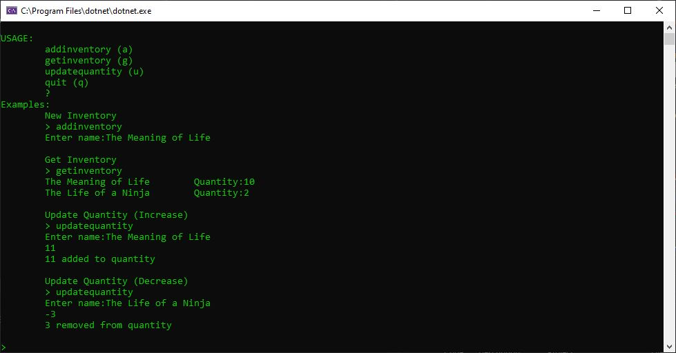
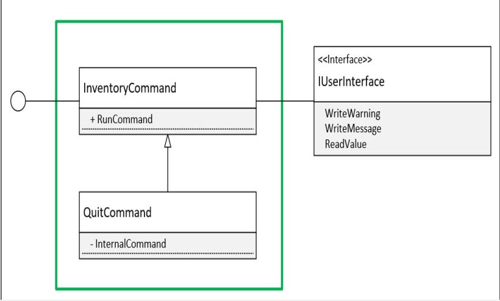

Inventory Application Overview
- Project Kickoff and Requirements Gathering
- Test Driven Development
- Abstract Factory Design Pattern
Implementing Design Patterns
This chapter will cover the kickoff of a new project and the creation of the first release of the application. The following patterns are illustrated in this chapter:
- Minimal Viable Product (MVP)
- Test-driven development (TDD)
- Abstract Factory pattern (Gang of Four)
- SOLID principles
MInimal Viable Product (MVP)
Many approaches, which can be viewed as patterns, exist for the determining the features of a software application. Best practices around how to effectively model, conduct interviews and workshops, brainstorm and other techniques are outside the scope of this book. Instead, one approach, Minimum Viable Product, is described to provide an example of what these patterns might contain. For example, a Business Analyst (BA) or Subject Matter Expert (SME) often represent both a business user and a member of the development team.
Requirements
The business and development teams were able to define the following functional requirements for the initial inventory management application:
- The application should be a console application:
- It should print a welcome message that includes the version of the assembly.
- It should loop until a quit command is given.
- If a given command is not successful or not understood, then it should print a helpful message.
- The application should respond to simple case-insensitive text commands.
- Each command should have a short form, of a single character, and a long form.
- If a command has additional parameters:
- Each one should be entered in sequence and submitted with the return key.
- Each one should have a prompt
Enter {parameter}:where{parameter}is the name of the parameter.
- A help command
(?)should be available:- Prints a summary of the commands available.
- Prints example usage of each command.
- A quit command
("q", quit)should be available:- Prints a farewell message
- Ends the application
- An add inventory command (“a”, “addinventory”) should be available:
- The name parameter of type string.
- It should add an entry into the database with the given name and a 0 quantity.
- An update quantity command
("u", "updatequantity")should be available :- The
nameparameter of type string. - The
quantityparameter of a positive or negative integer. - It should update the quantity value of the book with the given name by adding the given quantity.
- The
- A get inventory command
("g", "getinventory")should be available:- Returns all the books and their quantities in the database.
The FlixOne example is an illustration of how MVP could be used to help focus and streamline the SDLC. It is worth emphasizing that the difference between a Proof of Concept (PoC) and an MVP will differ with each organization. In this book, a PoC is different from MVP in that the resulting application is not viewed as disposable or incomplete. For a commercial product, this would mean the end product could be sold, and for an internal enterprise solution, the application could add value to the organization
Test-driven development (TDD)
The following diagram illustrates the basics of TDD:  The following diagram illustrates this approach: 
Setting up the projects
In this scenario, we will use the Microsoft Unit Test (MSTest) framework. This section provides some instructions to create the initial project using the .NET Core command-line interface (CLI) tools. These steps could have been completed using an integrated development environment (IDE) such as Visual Studio or Visual Studio Code. The instructions are supplied here to illustrate how the CLI can be used to complement the IDE.
CLI
.NET Core CLI tools are cross-platform utilities for developing .NET applications and are the basis for more
sophisticated tooling, such as IDEs. Please see the documentation for more information:
https://docs.microsoft.com/en-us/dotnet/core/tools
The solution for this chapter will consist of three projects: a console application, a class library, and
a test project.
Command create a new folder name mkdir name and a new soulution dotnet new sln


InventoryCommand abstract class
The following class diagram shows the inheritance of the InventoryCommand abstract class:  There is only one terminating command, QuitCommand, while the other commands extend the NonTerminatingCommand abstract class. It is also worth noting that only the AddInventoryCommand and UpdateQuantityCommand require parameters and the use of the IParameterisedCommand is explained later in the Liskov Substitution Principle section. Another subtle point in the diagram is that all the types, other than the base InventoryCommand, are not public (visible to external assemblies). 
InventoryCommand unit tests
A test regarding one of the commands will not need to validate the display of the messages on the console (for example, color or text size) as that is not the responsibility of the InventoryCommand classes but of the implementation of the IUserInterface. Also, with dependency injection, we will be able to isolate the test to just the inventory command. The following diagram illustrates this, as the unit test will only validate what is contained in the green box: 